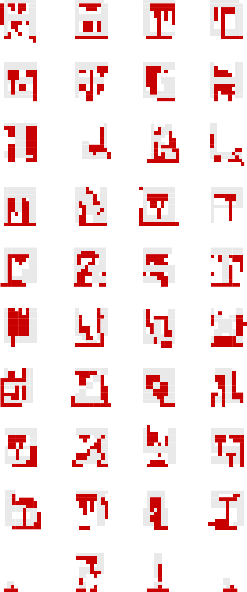
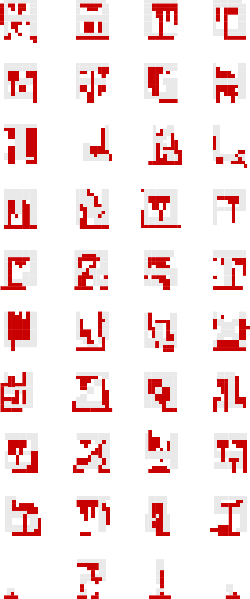
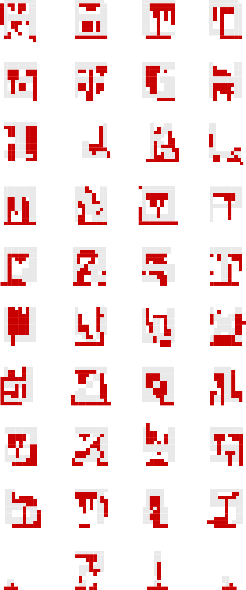

Bleeding Bits is a display typeface designed by Andrew Roque. The typeface is inspired by the forms created when water hits ink.
This attempts to capture that organic relationship into a formal grid system. The typeface comes in two weights: Regular and Bleed.
